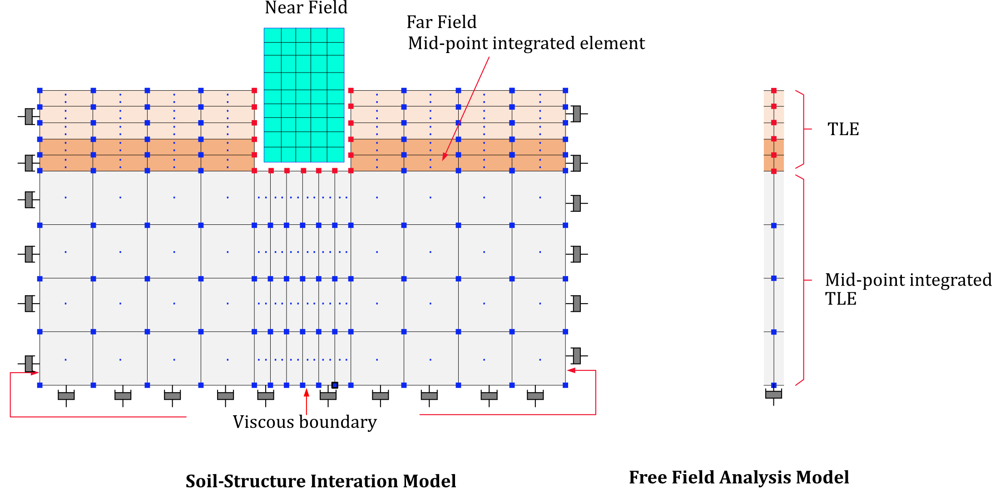

15. Modelling convenience
*Include
The *INCLUDE command inserts an external text file. It is used to manage complexity in input files.
*Include, File=file, [P=parameters]
Keyword line
- File=file: file name
- parameters: parameter expression. Must be enclosed in double quotes (
"), but this is optional.
Example
*INCLUDE, File=concrete.inp
*INCLUDE, File=model.inp, P="<S>=100. <T>=15.3, <Solver>={A,10}"
*DefaultParameter
Specifies the default parameter expression to be used when a parameter is not defined in a parameter expression.
*DefaultParameter, parameters
Keyword line
- parameters: parameter expression. Must be enclosed in double quotes (
"), but this is optional.
Parameter expressions can be used when running hfAnalyzer from the command line or specified within an *Include statement. A default expression can be set for any unspecified parameter expressions. For example, consider an input file as shown below.
model.inp
*DefaultParameter, "<E>=2E9, <nu>=0.18"
*Material, TYPE=IsoElasticity, Name=myMat
<E>, <nu>
...
If executed from the command line as shown below, it will be interpreted as follows.
> hfAnalzyer model.inp
→ <E> and <nu> are replaced with the values specified in `DefaultParameter`, which are 2E9 and 0.18, respectively.
> hfAnalzyer model.inp –p "<E>=5E9"
→ Since <E> is specified at a higher level, its value 5E9 is used, and the <E> value specified in the `DefaultParameter` statement is ignored. However, `<nu>` will apply the value 0.18.
If used as *Include, File=model.inp, P="<E>=5E9", the same concept can be applied.
▪ Note
The *DefaultParameter statement can be used multiple times within a file, but it applies to the entire file. This means that even if specified later in the file, it is treated as if it were defined at the beginning of the file.
*Distribution
Assigns properties to nodes or elements.
*Distribution, Type=type
target, ...
...
Keyword line
-
Type=type: Type of distribution (required)
- Section: Specify or release the cross-section of elements
- BeamCS: Specify or release ECS for beam elements
- BeamEndRelease: Specify or release moment end release for beam elements
- TendonHostElset: Specify or release the parent elset for tendon elements
- ShellThicknessByProjection: Specify or release nodal thickness for shell elements thru projection
- MCKElementScaleFactor: Specifies or releases the ScaleFactor for Spring, EarthSpring, and PointMass elements
- MCKElementCS: Specifies or releases the ECS (Element Coordinate System) for Spring, EarthSpring, and PointMass elements
- MovingSpringInitialPosition: Specify or release the initial position of moving springs
*Distribution, Type=Section
Specifies or releases the cross-sectional material properties of elements.
*Distribution, TYPE=Section
target1,target2,..., section
...
First dataline and subsequent datalines
- target1,target2,...: Element numbers, elsets, or element number patterns to specify the cross-sectional properties (required). Element number patterns follow the format
start:end:spacing, wherespacingcan be omitted if it is 1. - section: Section name (required)
Cross-sectional properties can be specified in *Element, but if omitted, they can also be specified using *Distribution, TYPE=Section. This command also allows for the deletion of already specified sections.
In the program, if there are two or more tokens in a line, it first checks whether the last token is a section; if not, it recognizes that the given section does not exist. If a section does not exist, the section already assigned to the target elements will be released. If you want to delete a section for an elset with the same name, only the elset should be listed on one line.
When specifying the target using element number patterns, non-existent elements are simply ignored and do not trigger an error.
Example
*Distribution, TYPE=Section
left, section1 # 요소집합 "left"에 단면 "section1"를 지정
right, middle, section2 # 요소집합 "right", “middle”에 단면 "section2"를 지정
1,2,3,4, section3 # 요소 1,2,3,4 단면 “section3” 지정
2:10 # 2~10 요소에 대해 이미 지정된 단면 지정을 삭제
*Distribution, Type=BeamCS
Specifies or releases the ECS (Element Coordinate System) for three-dimensional beam elements.
*Distribution, Type=BeamCS
target1,target2, ..., beamcs
...
First dataline and subsequent datalines
- target1,target2,...: Element numbers, elsets, or element number patterns to which the element coordinate system (ECS) is applied (required). Element number patterns follow the format
start:end:spacing, wherespacingcan be omitted if it is 1. This is only valid for three-dimensional beam elements. - beamcs: Beam's ECS (optional)
This command is only valid when the target elements are three-dimensional beam elements. In the program, if there are two or more tokens in a line, it first checks whether the last token is BeamCS. If it is not, the given beamcs is recognized as non-existent. If a beamcs does not exist, the beamcs already assigned to the target elements will be released. If you want to delete a beamcs for an elset with the same name, only the elset should be listed on one line.
When specifying the target using element number patterns, non-existent elements are simply ignored and do not trigger an error.
Example
*CoordinateSystem, Type=BeamCS, Name=beamcs
90
*Distribution, Type=BeamCS
1, 2, 3, beamcs
beamSet, beamcs
beamSet2, beamSet3, beamcs
beamset1, 1:10 # release
*Distribution, Type=BeamEndRelease
Specifies or releases the end-release conditions for beam elements.
*Distribution, Type=BeamEndRelease
target1,target2, ..., releaseCode
...
First dataline and subsequent datalines
- target1,target2,...: Element numbers, elsets, or element number patterns to which the end-release conditions are applied (required). Element number patterns follow the format
start:end:spacing, wherespacingcan be omitted if it is 1. This is only valid for beam elements. - releaseCode: End release code for the beam element (optional). This can be a combination of Rx1, Ry1, Rz1, Rx2, Ry2, Rz2. For example, Rz1|Rz2.
For two-dimensional beam elements, only Rz1 and Rz2 are valid. If no releaseCode is provided, any previously specified end release code will be released.
When specifying the target using element number patterns, non-existent elements are simply ignored and do not trigger an error.
Example
*Distribution, Type=BeamEndRelease
1, 2, 3, Rz1|Rz2
beamSet, Rx1|Ry1|Rz1
1:10 # Releases all end release codes for elements 1 through 10.
*Distribution, Type=TendonHostElset
Specifies or releases the parent elset for Tendon elements.
*Distribution, Type=TendonHostElset
target1,target2, ..., host
...
First dataline and subsequent datalines
- target: Element numbers, elsets, or element number patterns to which the parent element is applied (required). Element number patterns follow the format
start:end:spacing, wherespacingcan be omitted if it is 1. This is only valid for Tendon elements. - host: Host elset (optional).
If no host elset is provided, the host is removed from the specified elements. In the program, if there are two or more tokens in a line, it first checks whether the last token is a host. If it is not (i.e., based on whether it is an Tendon element), the given host is recognized as non-existent. If no host exists, any section already assigned to the target elements will be released.
When specifying the target using element number patterns, non-existent elements are simply ignored and do not trigger an error.
Example
*Distribution, Type=TendonHostElset
1,2,3, girder
tendonSet, crossbeam
tendonSet1,tendonSet2, mainGirder
tendonSet # Release
*Distribution, Type=ShellThicknessByProjection
Specifies the nodal thickness for shell elements by projection
*Distribution, Type=ShellThicknessByProjection, Shape=Rectangle
target, n1,n2,n3, h1,h2,h3
target, n1,n2,n3,n4, h1,h2,h3,h4
...
First dataline and subsequent datalines
- target: Nodes to which shell nodal thickness is applied via projection: either a single node, a node set, or a node ID pattern (required). The node ID pattern follows the format start:end[:spacing], where spacing can be omitted if it is 1.
- n1,n2,n3: Nodes that form a projection plane consisting of three points (required)
- h1,h2,h3: Nodal thickness for the projection plane formed by the three points (required).
- n1,n2,n3,n4: Nodes that form a projection plane consisting of four points (required)
- h1,h2,h3,h4: Nodal thickness for the projection plane formed by the four points (required).
The generated shell nodal thickness is recorded as *NProp, TYPE=ShellThickness. The four nodes that define the projection plane must lie on the same plane. If the geometry is warped and the nodes are not coplanar, the projection is performed onto the plane defined by the centroid of the four nodes. As a result, a slight error may occur when using warped geometry.
Example
*Distribution, Type=ShellThicknessByProjection
slab1, 1,100,105, 0.1,0.2,0.3
slab2, 1,100,105,107, 0.1,0.2,0.3,0.4
1:200:5, 1,100,105,107, 0.1,0.2,0.3,0.4
*Distribution, Type=MCKElementScaleFactor
Specifies or releases the ScaleFactor for Spring, EarthSpring, and PointMass elements.
*Distribution, Type=MCKElementScaleFactor
target1,target2, ..., sf
...
First dataline and subsequent datalines
- target1,target2,...: Element numbers, elsets, or element number patterns to which the ScaleFactor will be applied (required). Element number patterns follow the format
start:end:spacing, wherespacingcan be omitted if it is 1. This is only valid for Spring, EarthSpring, and PointMass elements. - sf: Scale factor
Specifies an additional scale factor for Spring, EarthSpring, and PointMass elements. If the target elements do not exist or are not of type Spring, EarthSpring, or PointMass, they are simply ignored and do not trigger an error.
Example
*Distribution, Type=MCKElementScaleFactor
1, 2, 3, 2.5 # Set a scale factor of 2.5 for elements 1, 2, and 3.
wall, 2.5 # Specify a scale factor of 2.5 for the wall elset (which must consist entirely of spring elements).
*Distribution, Type=MCKElementCS
Specifies or releases the ECS (Element Coordinate System) for Spring, EarthSpring, and PointMass elements.
*Distribution, Type=MCKElementCS
target1,target2, ..., ucs
...
First dataline and subsequent datalines
- target1,target2,...: Element numbers, elsets, or element number patterns to which the ECS will be applied (required). Element number patterns follow the format
start:end:spacing, wherespacingcan be omitted if it is 1. This is only valid for Spring, EarthSpring, and PointMass elements. - ucs: User Coordinate System (UCS) to be used for the spring elements (optional).
This command is valid only for elements that are Spring, EarthSpring, or PointMass. In the program, if there are two or more tokens in a line, it first checks whether the last token is a CS. If it is not, the given CS is recognized as non-existent. If no CS exists, any previously assigned CS to the target elements will be released. If you want to delete a CS for an elset with the same name, only the elset should be listed on one line. If the target elements do not exist or are not of type Spring, EarthSpring, or PointMass, they are simply ignored and do not trigger an error.
Example
*CoordinateSystem, Type=UCS, Name=springCS
1, 1, 0, 0, 1, 0
*Distribution, Type=MCKElementCS
1, 2, 3, springCS
springSet, springCS
springSet2, springSet3, springCS
springSet # Release
*Distribution, Type=MovingSpringInitialPosition
Specifies or releases the initial position of the moving spring.
*Distribution, Type=MovingSpringIntialPosition
target, x, y
...
First dataline and subsequent datalines
- target: Element numbers, elsets, or element number patterns to specify the initial position of the moving spring (required). Element number patterns follow the format
start:end:spacing, wherespacingcan be omitted if it is 1. This is only valid for MovingSpring elements. - P=x,y: Initial position (optional, default is 0,0). For moving springs targeting beam elements, only the x value is referenced.
The moving spring element (*Element, Type=MovingSpring) specifies its initial position (default is 0,0 if not specified). If the target elements do not exist or are not of type MovingSpring, they are simply ignored and do not trigger an error.
Example
*Distribution, Type=MovingSpringIntialPosition
100, -5, 0. # Apply the initial position of (-5, 0) to element 100.
*Model
Generates a pre-defined template model.
*Model, Type=type
...
Keyword line
-
Type=type: Type of model (required)
- Block2D: Generates a rectangular mesh using 2D solid elements
- Block3D: Generates a rectangular mesh using 3D solid elements
- Cylinder: Generates a cylinder mesh using 3D solid elements
- Wall: Generates a rectangular mesh using shell elements
- RectangularTank: Generates a rectangular tank mesh using shell elements
- CylindericalTank: Generates a cylinderical tank mesh using shell elements
- FarField2D: Generates a 2D mesh for SSI analysis and creates equivalent loads from the results of free field analysis
- FarField3D: Generates a 3D mesh for SSI analysis and creates equivalent loads from the results of free field analysis
*Model, Type=Block2D
Generates a rectangular mesh using 2D solid elements.
*Model, Type=Block2D
name, startNodeId, startElementId, elementType, section
x1, x2, ..., x{n+1}, nx1, nx2, ..., nx{n}
y1, y2, ..., y{n+1}, ny1, ny2, ..., ny{n}
ix1, iy1, ...
First dataline
- name: Representative name. This name serves as the basis for naming nsets, elsets, surfaces, loads, etc., created by this command.
- startNodeId, startElementId: Starting node and element numbers. Use "Auto" for automatic calculation.
- elementType: Type of element to apply, such as CPS4, AC2D4, etc., for 2D rectangular solid elements.
- section: Section to apply (optional; if omitted, no section is applied to the elements).
Second and third datalines
- x1, x2, ..., x{n+1}, nx1, nx2, ..., nx{n}: x range and number of elements.
- y1, y2, ..., y{n+1}, ny1, ny2, ..., ny{n}: y range and number of elements.
Fourth dataline (optional)
- ix, iy, ...: Block numbers to be deleted (ix, iy).
This command generates entities such as nsets, elsets, and surfaces in addition to nodes and elements.
- Nset:
name(all nodes) - Elset:
name(all elements) - Surface:
name(all outer surfaces),name-NX(surface where X=xmin),name-PX(surface where X=xmax),name-NY(surface where Y=ymin),name-PY(surface where Y=ymax). If there are blocks to be deleted, surfaces adjacent to the deleted regions are created asname-i-j-PX,name-i-j-NX,name-i-j-PY,name-i-j-NY, where i and j are the numbers of the deleted regions.

Fig. 15.5-1. Block2D mesh generation
Example
*Material, Type=IsoElasticity, Name=steel
2E6, 0.2
*Section, Type=Solid, Name=solid
steel, 0.1
*Model, TYPE=Block2D
Cant, 1, 1, CPS4, solid # Generate elements with solid section
0, 20, 10
0, 4, 4
*Model, TYPE=Block2D
CantX, Auto, Auto, CPS4 # Generate elements without section
0, 20, 10
0, 4, 4
*Model, Type=Block3D
Generates a rectangular mesh using 3D solid elements.
*Model, Type=Block3D
name, startNodeId, startElementId, elementType, section
x1, x2, ..., x{n+1}, nx1, nx2, ..., nx{n}
y1, y2, ..., y{n+1}, ny1, ny2, ..., ny{n}
z1, z2, ..., z{n+1}, nz1, nz2, ..., nz{n}
ix, iy, iz, ...
First dataline
- name: Representative name. This name serves as the basis for naming nsets, elsets, surfaces, loads, etc., created by this command.
- startNodeId, startElementId: Starting node and element numbers. Use "Auto" for automatic calculation.
- elementType: Type of element to apply, such as C3D8, AC3D8, etc., for 3D hexahedral solid elements.
- section: Section to apply (optional; if omitted, no section is applied to the elements).
Second, third, and fourth datalines
- x1, x2, ..., x{n+1}, nx1, nx2, ..., nx{n}: x range and number of elements.
- y1, y2, ..., y{n+1}, ny1, ny2, ..., ny{n}: y range and number of elements.
- z1, z2, ..., z{n+1}, nz1, nz2, ..., nz{n}: z range and number of elements.
First dataline for deletion
- ix, iy, iz, ...: Block numbers to be deleted (ix, iy, iz).
This command generates entities such as nsets, elsets, and surfaces in addition to nodes and elements.
- Nset:
name(all nodes) - Elset:
name(all elements) - Surface:
name(all outer surfaces),name-NX(surface where X=-xmin),name-PX(surface where X=xmax),name-NY(surface where Y=ymin),name-PY(surface where Y=ymax),name-NZ(surface where Z=zmin),name-PZ(surface where Z=zmax), If there are blocks to be deleted, surfaces adjacent to the deleted regions are created asname-i-j-k-PX,name-i-j-k-NX,name-i-j-k-PY,name-i-j-k-NY,name-i-j-k-NZ,name-i-j-k-PZ, where i, j, and k are the numbers of the deleted regions.
Fig. 15.5-2. Block3D mesh generation
Example
*Material, Type=IsoElasticity, Name=steel
2E6, 0.2
*Section, Type=Solid, Name=solid
steel, 1
*Model, TYPE=Block3D
Cant, 1, 1, C3D8, solid # Generate elements with solid section
0, 20, 10
0, 4, 4
0, 2, 2
*Model, TYPE=Block3D
Cant, Auto, Auto, C3D8 # Generate elements without section
0, 20, 10
0, 4, 4
0, 2, 2
*Model, Type=Cylinder
Creates a cylindrical mesh.
*Model, Type=Cylinder
name, startNodeId, startElementId, elementType, section
x0, y0, z0, R, nseg
h1, h2, ..., h{n}, nh1, nh2, ... nh{n}
First dataline
- name: Representative name used as the base name for entities like nsets, elsets, surfaces, and loads created by this command.
- startNodeId, startElementId : Starting node and element IDs. Use "Auto" for automatic calculation.
- elementType: Type of the element to apply, such as 3D hexahedral solid elements like C3D8, AC3D8.
- section: Section to be applied (optional; if omitted, no section is applied to the elements).
Second dataline
- x0, x0, z0: Origin coordinates.
- R: Radius in the xy-plane.
- nseg: No. of segments in the perimeter of quarter outer circle. If nseg is less than 4, 4 is used. (optioanl, default 0)
Third dataline
- h1, h2, ... h{n}, nh1, nh2, ..., nh: Heights in the z-direction and the number of elements along each height.
In addition to nodes and elements, the command generates other entities like nsets, elsets, and surfaces:
- Nset : name (all nodes)
- Elset : name (all elements)
- Surface : name (all outer surfaces), name-Top(top surface), name-Bottom(bottom surface), name-Side(side surface)
Example
*Material, Type=Acoustic, Name=Water
2190.4E+6, 1000 # bulkModulus, density ... compressible
*Section, Type=Solid, Name=Water
Water, 1 # thickness
*Model, TYPE=Cylinder
Water, auto, auto, AC3D8, Water
0,0,0,18.3,4 # x0, y0, z0, R, nseg
12.2,5 # h1,...,nh1,...
*Model, Type=Wall
Generates a rectangular mesh using shell elements.
*Model, Type=Wall
name, startNodeId, startElementId, elementType, section
ox, oy, oz, x1, x2, x3, y1, y2, y3
lxmin, lxmax, nlx
lymin, lymax, nly
- name: Representative name. This name serves as the basis for naming nsets, elsets, surfaces, loads, etc., created by this command.
- startNodeId, startElementId: Starting node and element numbers. Use "Auto" for automatic calculation.
- elementType: Type of element to apply, such as 4-node shell elements (S4, S4F, etc.) or 8-node solid shells (CS8).
- section: Section to apply (optional; if omitted, no section is applied to the elements).
Second dataline
- ox, oy, oz: Reference point of the local coordinate system.
- x1, x2, x3: Defines the x-axis of the local coordinate system.
- y1, y2, y3: Another vector defining the plane of the local coordinate system. The y-axis is created as y = x × z.
Third and fourth datalines
- lx1min, lxmax, nlx: Range and number of elements for the first axis (local x) in the local coordinate system.
- lymin, lymax, nly: Range and number of elements for the second axis (local y) in the local coordinate system.
This command generates entities such as nsets and elsets in addition to nodes and elements.
- Nset:
name(all nodes) - Elset:
name(all elements)
When applying CS8 elements, a single layer of solid shell is created based on shell thickness. If no shell section is provided, a thickness of 1 is applied.
Example
*Material, Type=IsoElasticity, Name=steel
2E6, 0.2
*Section, Type=Shell, Name=beam
steel, 0.1
*Model, Type=Wall
beam, Auto, Auto, S4, beam
0, 0, 0, 1, 0, 0, 0, 1, 0
0, 20, 20
0, 4, 4
*Model, Type=RectangularTank
Generates a rectangular tank mesh using shell elements with an open top surface.
*Model, Type=RectangularTank
name, startNodeId, startElementId, elementType, wallSection, bottomSection
x1, x2, ..., x{n+1}, nx1, nx2, ..., nx{n}
y1, y2, ..., y{n+1}, ny1, ny2, ..., ny{n}
z1, z2, ..., z{n+1}, nz1, nz2, ..., nz{n}
First dataline
- name: Representative name. This name serves as the basis for naming nsets, elsets, surfaces, loads, etc., created by this command.
- startNodeId, startElementId: Starting node and element numbers. Use "Auto" for automatic calculation.
- elementType: Type of element to apply, such as S4F for rectangular shell elements.
- wallSection, bottomSection: Sections for the wall and bottom surfaces (optional; if omitted, no section is applied to the elements).
Second, third, and fourth datalines
- x1, x2, ..., x{n+1}, nx1, nx2, ..., nx{n}: x range and number of elements.
- y1, y2, ..., y{n+1}, ny1, ny2, ..., ny{n}: y range and number of elements.
- z1, z2, ..., z{n+1}, nz1, nz2, ..., nz{n}: z range and number of elements.
This command generates entities such as nsets, elsets, and surfaces in addition to nodes and elements.
- Nset:
name(all nodes) - Elset:
name(all elements) - Surface:
name(all outer surfaces),name-NX(surface where X=-xmin),name-PX(surface where X=xmax),name-NY(surface where Y=ymin),name-PY(surface where Y=ymax),name-Bottom(surface where Z=zmin)
Fig. 15.5-3. RectangularTank mesh generation
Example
*Material,Type=IsoElasticity,Name=mat
30E9, 0.18, 0, 2000. # E, nu, alpha, density
*Section, Type=Shell, Name=shell
mat, 0.01 # h
*Model, TYPE=RectangularTank
Cant, 1, 1, S4F, shell, shell
0, 20, 10
0, 4, 4
0, 2, 2
*Model, TYPE=RectangularTank
CantX, Auto, Auto, S4F # Generate elements without section
0, 20, 10
0, 4, 4
0, 2, 2
*Model, Type=CylindericalTank
Creates a cylindrical tank mesh with an open top using shell elements.
*Model, Type=CylindericalTank
name, startNodeId, startElementId, elementType, wallSection, bottomSection
x0, y0, z0, R, nseg
h1, h2, ..., h{n}, nh1, nh2, ... nh{n}
First dataline
- name: Representative name used as the base name for entities like nsets, elsets, surfaces, and loads created by this command.
- startNodeId, startElementId : Starting node and element IDs. Use "Auto" for automatic calculation.
- elementType: Type of the element to apply, such as rectangular shell elements like S4F.
- wallSection, bottomSection: Sections for the wall and bottom (optional; if omitted, no section is applied to the elements).
Second dataline
- x0, x0, z0: Origin coordinates.
- R: Radius in the xy-plane.
- nseg: No. of segments in the perimeter of quarter outer circle. If nseg is less than 4, 4 is used. (optioanl, default 0)
Third dataline
- h1, h2, ... h{n}, nh1, nh2, ..., nh: Heights in the z-direction and the number of elements along each height.
In addition to nodes and elements, the command generates other entities like nsets, elsets, and surfaces:
- Nset : name (all nodes)
- Elset : name (all elements)
- Surface : name (all outer surfaces), name-Bottom(bottom surface), name-Side(side surface)
Example
*Material, Type=IsoElasticity, Name=Tank
2.0776E+10, 0.17, 0, 2300 # E(MPa), nu, alpha, density
*Section, Type=Shell, Name=Tank
Tank, 1.2
*Model, TYPE=CylindericalTank
Tank, auto, auto, S4F, Tank, Tank
0,0,0,18.3,4 # x0, y0, z0, R, nseg
12.2,1.8,5,2 # h1,...,nh1,...
*Model, TYPE=FarField2D
Generates a 2D mesh for SSI (Soil-Structure Interaction) analysis, performs free field analysis, and calculates equivalent loads.
*Model, TYPE=FarField2D
name, startNodeId, startElementId, outputFormat
acceleration, iz, Direct|Outcrop, rcx, x0
nearMinX, nearMaxX, nearMeshCountX, farMeshSizeX, farMeshCountX
ytop
E1, nu1, density1, xi1, h1, ny1
E2, nu2, density2, xi2, h2, ny2
...
En, nun, densityn, xin, hn, nyn
{bottomNSet} | {EHalf, nuHalf, densityHalf, xiHalf, farMeshSizeY, farMeshCountY}
First dataline
- name: Representative name. This name serves as the basis for naming nsets, elsets, surfaces, loads, etc., created by this command.
- startNodeId, startElementId: Starting node and element numbers. Use "Auto" for automatic calculation.
- outputFormat: Output time history file format for equivalent loads and ground motion at the bottom surface. Options are auto, csv, or npy. If "csv" is chosen, output will be in CSV format only; if "npy" is chosen, output will be in NPY format only. If "auto" is selected, it checks the number of columns in the generated function file: if 16,364 or fewer, it outputs as CSV; otherwise, it outputs as NPY. The default is "auto".
Second dataline
- acceleration: Acceleration time history function. Must be a TimeSeries function with two components, corresponding to the acceleration in the X and Y directions.
- iz, Direct|Outcrop: Layer boundary number (1-based) where the time history is applied and the input method (if Direct, it treats the acceleration input as being at iz; if Outcrop, it treats it as outcrop motion).
izcan be specified up to(number of layers) + 1. However, if the base condition is rigid (Rigid) and specified as Outcrop, it can be specified only up to(number of layers)(to specify Outcrop, there must be underlying layer information). - rcx: Inverse of the horizontal apparent velocity of the incoming seismic wave. Calculated as
rcx = 1/cx, wherecx = cp/lx = cs/mx, withcpandcsbeing the P-wave and S-wave velocities, and(lx, ly, lz)and(mx, my, mz)being the unit direction vectors for P-waves and S-waves, respectively. The use ofrcxinstead ofcxis due to the fact that the direct cosinelxandmxare zero for vertically incident waves. - x0: Reference point for the incoming seismic wave.
Third dataline
- nearMinX, nearMaxX, nearMeshCountX, farMeshSizeX, farMeshCountX: Range and number of elements for the near field in the X direction, size of the far field mesh, and number of elements.
Fourth dataline
- ytop: Position of the ground surface.
- f0: Reference frequency (Hz). Applied when approximating using stiffness-proportional damping for effective load calculations (for single-layer ground, the first natural frequency is
vs/4H; for multi-layer ground, the equivalent accelerationvse = sum(Hi)/sum(Hi/Vsi)is calculated and then applied tovse/4H; damping ratio is set to 5% based on material damping).
Fifth dataline and subsequent datalines
- E1, nu1, density1, xi1, h1, nz1: Material properties and height for the first layer of ground from the surface.
- E2, nu2, density2, xi2, h2, nz2: Material properties and height for the second layer of ground from the surface (optional).
- ...
- En, nun, densityn, xin, hn, nzn: Material properties and height for the nth layer of ground from the surface (optional).
Last dataline
- bottomNset: Name of the nset at the base if rigid conditions are applied.
- EHalf, nuHalf, densityHalf, xiHalf, farMeshSizeY, farMeshCountY: Material properties for the bedrock under flexible conditions, and the size and number of elements for the far field in the Y direction.
The conditions can be set for either Rigid or Flexible based on whether the stiffness of the base is considered. The CPE4PMDL element is used for the SimplePMDL formulation to handle infinite regions, and a viscous boundary is set at the outer edge of the far field mesh. In addition to nodes and elements, entities such as the given name and bottomNset will generate:
- Materials:
name-1,name-2, ... (materials corresponding to layers),name-half(material corresponding to the half space). - Sections:
name-1,name-2, ... (sections corresponding to layers),name-half(section corresponding to the half space). - Elsets:
name(all elements),name-1,name-2, ... (elements corresponding to layers),name-half(elements corresponding to the half space). - Surfaces:
name-Boundary(outer boundary of the far field),name-NNX(near field-boundary where X=nearXMin),name-PX(near field-boundary where X=nearXMax),name-NY(near field-boundary where Y=ymin),name-PY(near field-boundary where Y=ymax),name-Bottom(near field-boundary where Z=zmin for flexible conditions). - Constraints:
name-Boundary(viscous boundary). - Loads:
name-Effective(equivalent loads),bottomNset-Motion(prescribed motion load for rigid conditions). - Functions:
name-Effective(time function used for effective loads),bottomNset-Motion(time function used for node motion in rigid conditions).
The generated time history files are:
<DB>-name-Freefield.csv|npy: Time history file for free field analysis results showing layer boundary responses in terms of displacement, velocity, and acceleration. This is for reference and not used in the analysis.<DB>-name-Effective.csv|npy: Time history file for effective loads acting at the near-field-far-field boundary.<DB>-bottomNset-Motion.csv|npy: Time history file storing prescribed motion in rigid conditions.
Here, <DB> refers to the input file name without the extension.

Fig. 15.5-4. Rigid case
Fig. 15.5-4. Rigid case

Fig. 15.5-5. Flexible case
Fig. 15.5-5. Flexible case
Fig. 15.5-6. Acceleration history input
Example
*Function, TYPE=TimeSignal, Name=acc
0.02, 4096
ELCchopra.dat, 1, 0.31*9.81
ELCchopra.dat, 1, 0.31*9.81
*Node, NSet=Bottom
1, -10, -30
2, 10, -30
3, 10, -30
4, -10, -30
*Model, TYPE=FarField2D
RigidBase2D, Auto, Auto
acc, 3, Direct, 1/200, 0 # acc, iz, Direct|Outcrop, rcx, x0
-10, 10, 1, 16, 10 # nearMinX, nearMaxX, nearMeshCountX, farMeshSizeX, farMeshCountX
0, 1. # ztop, f0
20E9,0.2, 2000, 0.02, 10, 5 # E, nu, density, xi, h, nz
25E9,0.2, 2000, 0.02, 20, 10 # E, nu, density, xi, h, nz
Bottom
*Model, TYPE=FarField2D
FlexibleBase2D, Auto, Auto
acc, 3, Outcrop, 1/200, 0 # acc, iz, Direct|Outcrop, rcx, x0
-10, 10, 1, 16, 10 # nearMinX, nearMaxX, nearMeshCountX, farMeshSizeX, farMeshCountX
0, 1. # ztop, f0
20E9,0.2, 2000, 0.02, 10, 5 # E, nu, density, xi, h, nz
25E9,0.2, 2000, 0.02, 20, 10 # E, nu, density, xi, h, nz
30E9, 0.2, 2000, 0.02, 16, 10 # E, nu, density, xi, farMeshSizeZ, farMeshCountZ
*Model, TYPE=FarField3D
Generates a 3D mesh for SSI (Soil-Structure Interaction) analysis, performs free field analysis, and calculates equivalent loads.
*Model, TYPE=FarField3D
name, startNodeId, startElementId, outputFormat
acceleration, iz, Direct|Outcrop, rcx, rcy, x0, y0
nearMinX, nearMaxX, nearMeshCountX, farMeshSizeX, farMeshCountX
nearMinY, nearMaxY, nearMeshCountY, farMeshSizeY, farMeshCountY
ztop
E1, nu1, density1, xi1, h1, nz1
E2, nu2, density2, xi2, h2, nz2
...
En, nun, densityn, xin, hn, nzn
{bottomNSet} | {EHalf, nuHalf, densityHalf, xiHalf, farMeshSizeZ, farMeshCountZ}
First dataline
- name: Representative name. This name serves as the basis for naming nsets, elsets, surfaces, loads, etc., created by this command.
- startNodeId, startElementId: Starting node and element numbers. Use "Auto" for automatic calculation.
- outputFormat: Output time history file format for equivalent loads and ground motion at the bottom surface. Options are auto, csv, or npy. If "csv" is chosen, output will be in CSV format only; if "npy" is chosen, output will be in NPY format only. If "auto" is selected, it checks the number of columns in the generated function file: if 16,364 or fewer, it outputs as CSV; otherwise, it outputs as NPY. The default is "auto".
Second dataline
- acceleration: Acceleration time history function. Must be a TimeSeries function with three components, corresponding to the acceleration in the X, Y, and Z directions.
- iz, Direct|Outcrop: Layer boundary number (1-based) where the time history is applied and the input method (if Direct, it treats the acceleration input as being at iz; if Outcrop, it treats it as outcrop motion).
izcan be specified up to(number of layers) + 1. However, if the base condition is rigid (Rigid) and specified as Outcrop, it can be specified only up to(number of layers)(to specify Outcrop, there must be underlying layer information). - rcx, rcy: Inverse of the horizontal apparent velocity of the incoming seismic wave. Calculated as
rcx = 1/cx,rcy = 1/cy, wherecx = cp/lx = cs/mx,cy = cp/ly = cs/my. Here,cpandcsare the P-wave and S-wave velocities, and(lx, ly, lz)and(mx, my, mz)are the unit direction vectors for P-waves and S-waves, respectively. The use ofrcxandrcyinstead ofcxandcyis to avoid cases where direct cosineslx,mx,ly, andmymight be 0. Ifrcx = rcy = 0, it assumes vertical incidence. - x0, y0: Reference point for the incoming seismic wave.
Third dataline
- nearMinX, nearMaxX, nearMeshCountX, farMeshSizeX, farMeshCountX: Range and number of elements for the near field in the X direction, size of the far field mesh, and number of elements.
- nearMinY, nearMaxY, nearMeshCountY, farMeshSizeY, farMeshCountY: Range and number of elements for the near field in the Y direction, size of the far field mesh, and number of elements.
Fourth dataline
- ztop: Position of the ground surface.
- f0: Reference frequency (Hz). Applied when approximating using stiffness-proportional damping for effective load calculations (for single-layer ground, the first natural frequency is
vs/4H; for multi-layer ground, the equivalent accelerationvse = sum(Hi)/sum(Hi/Vsi)is calculated and then applied tovse/4H; damping ratio is set to 5% based on material damping).
Fifth dataline and subsequent datalines
- E1, nu1, density1, xi1, h1, nz1: Material properties and height for the first layer of ground from the surface.
- E2, nu2, density2, xi2, h2, nz2: Material properties and height for the second layer of ground from the surface (optional).
- ...
- En, nuN, densityN, xiN, hN, nzN: Material properties and height for the nth layer of ground from the surface (optional).
Last dataline
- bottomNset: Name of the nset at the base if rigid conditions are applied.
- EHalf, nuHalf, densityHalf, xiHalf, farMeshSizeZ, farMeshCountZ: Material properties for the bedrock under flexible conditions and the size and number of elements for the far field in the Z direction.
The conditions can be set for either Rigid or Flexible based on whether the stiffness of the base is considered. The C3D8PMDL element is used for the SimplePMDL formulation to handle infinite regions, and a viscous boundary is set at the outer edge of the far field mesh. In addition to nodes and elements, entities such as the given name and bottomNset will generate:
- Materials:
name-1,name-2, ... (materials corresponding to layers),name-half(material corresponding to the half space). - Sections:
name-1,name-2, ... (sections corresponding to layers),name-half(section corresponding to the half space). - Elsets:
name(all elements),name-1,name-2, ... (elements corresponding to layers),name-half(elements corresponding to the half space). - Surfaces:
name-Boundary(outer boundary of the far field),name-NNX(near field-boundary where X=nearXMin),name-PX(near field-boundary where X=nearXMax),name-NNY(near field-boundary where Y=nearYMin),name-PY(near field-boundary where Y=nearYMax),name-NBottom(near field-boundary where Z=zmin for flexible conditions).- Constraints:
name-Boundary(viscous boundary). - Loads:
name-Effective(equivalent loads),bottomNst-Motion(prescribed motion load for rigid conditions). - Functions:
name-Effective(time function used for effective loads),bottomNset-Motion(time function used for node motion in rigid conditions).
The generated time history files are:
<DB>-name-Freefield.csv|npy: Time history file for free field analysis results showing layer boundary responses in terms of displacement, velocity, and acceleration. This is for reference and not used in the analysis.<DB>-name-Effective.csv|npy: Time history file for effective loads acting at the near-field-far-field boundary.<DB>-bottomNset-Motion.csv|npy: Time history file storing prescribed motion in rigid conditions.
Here, <DB> refers to the input file name without the extension.
Example
*Function, TYPE=TimeSignal, Name=acc
0.02, 1024
ELCchopra.dat, 1, 0.31*9.81
ELCchopra.dat, 1, 0.31*9.81
ELCchopra.dat, 1, 0.31*9.81
*Node, NSet=Bottom
1, -10, -20, -30
2, 10, -20, -30
3, 10, 20, -30
4, -10, 20, -30
*Model, TYPE=FarField3D
RigidBase3D, Auto, Auto
acc, 2, Direct, 1/200, 1/100, 0, 0 # acceleration, iz, Direct|Outcrop, rcx, rcy, x0, y0
-10, 10, 1, 16, 10 # nearMinX, nearMaxX, nearMeshCountX, farMeshSizeX, farMeshCountX
-20, 20, 1, 16, 10 # nearMinY, nearMaxY, nearMeshCountY, farMeshSizeY, farMeshCountY
0, 1. # ztop, f0
20E9,0.2, 2000, 0.02, 10, 5 # E, nu, density, xi, h, nz
25E9,0.2, 2000, 0.02, 20, 10 # E, nu, density, xi, h, nz
Bottom
*Model, TYPE=FarField3D
FlexibleBase3D, Auto, Auto
acc, 2, Outcrop, 1/200, 1/100, 0, 0 # acceleration, iz, Direct|Outcrop, rcx, rcy, x0, y0
-10, 10, 1, 16, 10 # nearMinX, nearMaxX, nearMeshCountX, farMeshSizeX, farMeshCountX
-20, 20, 1, 16, 10 # nearMinY, nearMaxY, nearMeshCountY, farMeshSizeY, farMeshCountY
0, 1. # ztop, f0
20E9,0.2, 2000, 0.02, 10, 5 # E, nu, density, xi, h, nz
25E9,0.2, 2000, 0.02, 20, 10 # E, nu, density, xi, h, nz
30E9, 0.2, 2000, 0.02, 16, 10 # E, nu, density, xi, farMeshSizeZ, farMeshCountZ